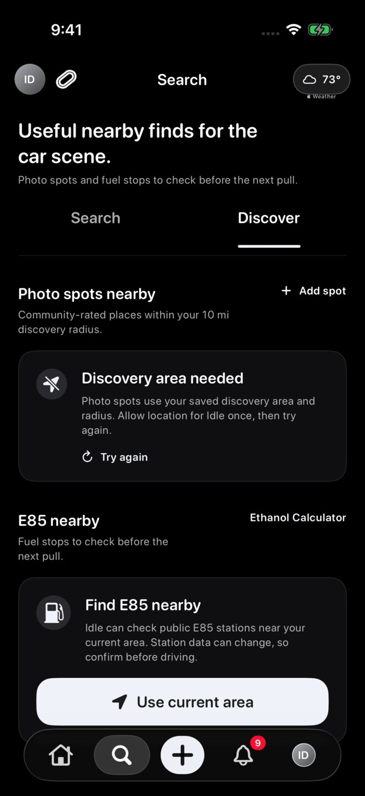
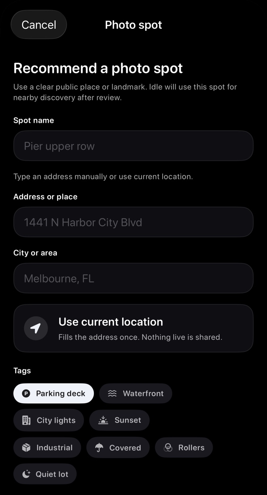
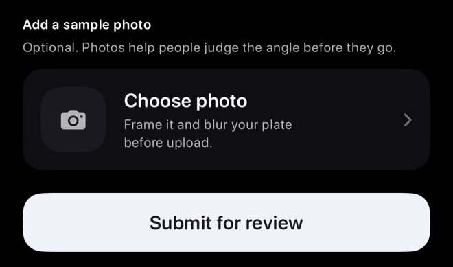

These screenshots use sample content in a preview version of Idle. Your app may look different. Select an image to see the full screen.
Find photo spots
- Open Search in Idle, then select Discover.
- Scroll to Photo spots nearby. Tap Check spots if it appears.
- Browse approved spots near your discovery area.
- Review the name, tags, rating, distance, and photos when available.
- Tap Maps on the spot's card for directions if you decide to go.
If you see Discovery area needed, photo spots need your saved discovery area and radius. Check location permission, then use Try again.


Recommend a spot
- Tap Add spot beside Photo spots nearby.
- Enter a Spot name, Address or place, and City or area.
- Type the address manually, or use Use current location when available.
- Choose at least one helpful Tag for the location.


Submit for review
Add an optional photo with Choose photo. When your recommendation is ready, choose Submit for review.
For a real account, new recommendations are submitted for review and appear in Discover after approval.


Review the discovery radius
Open Home → avatar sidebar → Settings → Navigation and choose a Nearby radius. You can check the distance again under Search → Discover.
If you see Discovery area needed, check location access and try again. The radius sets how far to look; it does not choose a city.
Rate a spot
- In Search > Discover > Photo spots nearby, tap Rate on the spot's card.
- Choose 1 to 5 stars and add a photo if useful, then tap Save rating.
- To change your existing rating, tap Update. You can replace your rating photo or choose Remove current photo before saving.
Change or remove your recommendation
On a spot you recommended, tap Edit name, change the name, then tap Save name. This changes only the name. To remove your recommendation from Discover, tap Remove and confirm Remove spot. These controls appear on your own listed recommendations.
Troubleshooting
- No spots nearbyReview location access and your nearby radius, or check again later.
- Submission is not visibleIt may still be pending review or may not have been approved.
- Location will not fill inCheck location permission or enter the location manually if available.
- Photo failedTry a clearer supported image and check your connection.
Be respectful
Follow local rules, respect private property, and avoid unsafe behavior when visiting or recommending a photo spot.
Still need help?
Email support@idlemeets.com with the spot name, city, and a screenshot if the issue is visible.